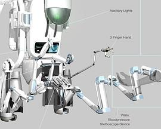
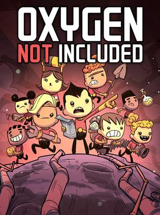
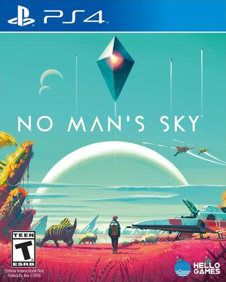
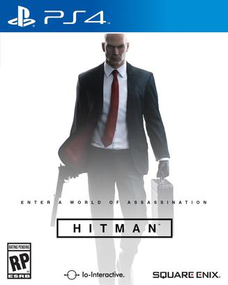
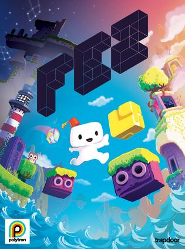
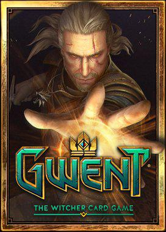
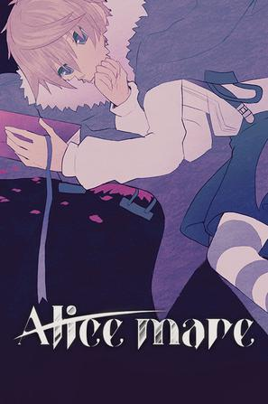

2017年2月 23 条
2017-02-26 16:41:26
想看 海洋深处 / In the Heart of the Sea
2017-02-26 16:39:24

2017-02-24 16:15:24
写了关于 幽灵行动：荒野 Tom Clancy’s Ghost Recon Wildlands 的文字 一个区域的很多地点都一模一样啊，是偷工减料了吗
2017-02-24 00:55:59
玩过 幽灵行动：荒野 Tom Clancy’s Ghost Recon Wildlands ★★★★★
今天开放公测，9点玩到现在，确实很好玩，把直升机和滑翔机当做自行车开的体验真是太赞了，就是滑翔机降落除了追击真没办法lol；然后这个超远狙也是可以的，狙成功了一个505m的；引入了高科技元素，用起来也是很爽的，感觉唯一问题就是现在优化还不行
2017-02-21 20:19:11
想玩 冒险岛2 메이플스토리2
3月7号终于要最后一轮内测了 _(:з」∠)_ 听到BGM竟然想流泪
2017-02-21 19:32:37
看过 奇异博士 / Doctor Strange ★★★★★
Doctor Strange 主角就叫斯特兰奇博士，hhh原来是这么翻译过来的，感觉很好看啊
2017-02-20 07:27:44

三大妈真是牛。。。测试包都弄出来了
2017-02-18 18:07:56
蛋疼啊，50G的镜像拷贝了41G，SCP竟然断了，然后rsync -P和-W一起使用竟然把我进度覆盖掉了，累觉不爱。。。。。
2017-02-17 20:28:20

宇宙那么大，我探索了一个小时却遇不到一颗星球，珍惜生命，别学天文学：）这个游戏的想法确实是很棒，但是无比寂寥，为什么我要开一个小时宇宙飞船却没有目标 =。=我的这个星系大概太小了
2017-02-17 07:43:01

推出了Linux版，然后又是潜行类，然后又是半价，于是入了，回头全线跑Antergos喽！ HITMAN™: THE COMPLETE FIRST SEASON [Prologue + Episode 1-6 + Bonus Episode] - ¥ 8…
2017-02-15 06:44:53
玩过 使命召唤 Call of Duty ★★★★☆
13年后的现在玩起来还是蛮上瘾的，虽然画面是640x360的，但是做的相当好，体验了一把
2017-02-14 22:44:24
看过 生化危机：终章 / Resident Evil: The Final Chapter ★★★★☆
完结撒花，讲真颇有《黑客帝国》的感觉
2017-02-14 21:49:42
BGM 很带感啊，我要看原作！
2017-02-12 21:00:23
玩过 侠客风云传 ★★★★☆
玩法挺多样的，感觉还不错，就是画面实在是有点简陋
2017-02-12 20:24:18

画面看起来很精致，地图的组织有点乱，脑栈大小不够了，地图之间还会跳 orz 总之做的很不错，最后删游戏是因为迷失在无尽的深海里了（BUG）
2017-02-11 14:49:53

很好玩！比炉石简单，但是不失趣味性
2017-02-10 18:59:30
看过 长城 / The Great Wall ★★★☆☆
感觉有点意思，又感觉有点无聊 _(:з」∠)_ 有些视角和刺客信条好像啊！Fair
2017-02-09 21:34:00
看过 One Room ★★★★☆
第一集看得我尴尬症都犯了 _(:з」∠)_ 画面不错，BGM一般，从头到尾只有一个人在自言自语这点实在是不能接受啊
2017-02-08 19:50:32
看过 我在故宫修文物 ★★★★★
真是特别涨姿势，然后也是油然而生的敬佩，术业有专攻，好看！
2017-02-06 14:23:42
看过 独立游戏大电影 / Indie Game: The Movie ★★★★★
影片里面的FEZ、Braid、SuperMeatBoy制作确实很用心，画面很精美~ 果然还是要花上好几年的时间才能磨砺出一部游戏 _(:з」∠)_
2017-02-05 18:18:23

场景很大，但是感觉更适合小孩子啊 _(:з」∠)_
2017-02-05 17:10:52
看过 湄公河行动 ★★★★★
不错啊，好燃！顺便，谁告诉我只有英联邦才是右边驾驶的？？？缅甸也是右边驾驶啊！！！
2017-02-01 21:32:20
看过 泪王子 / 淚王子 ★★★★☆
因为《返校》了解到这部电影，看了才知道台湾还有过这段历史。